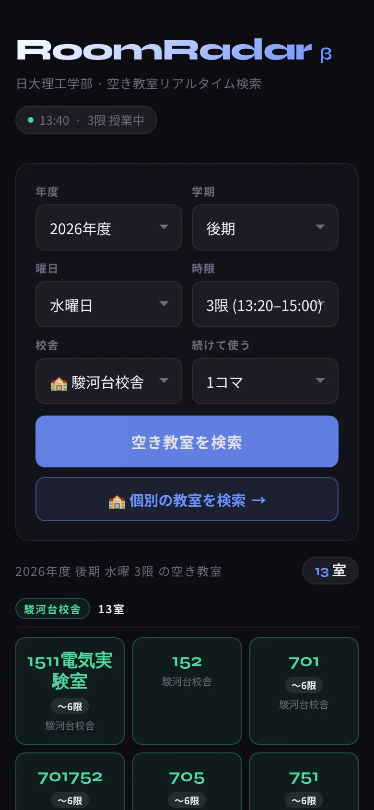

自主創造プロジェクト · RoomRadar
空きコマに教室のドアを開けたら、授業中だった。
あの気まずさを減らしたくて、作りました。
RoomRadar は、日本大学理工学部の空き教室を、時間割から探せるサービスです。いまは駿河台キャンパスが対象です。
登録なし・無料。「空き」は時間割の上の話です。入る前に、ドア越しに確かめてください。
TEST本サービスは、学生が「自主創造プロジェクト」の一環として開発・運営している試験運用中のサービスです。大学が公式に提供するサービスではありません。
何ができる？
開くだけで、いま授業のない教室が出ます。
どの教室で授業があるかは、時間割表に書いてあります。でも、歩きながら全部は見られません。RoomRadar が、かわりに全部読みます。
-
開く
いまの時限に授業のない教室が、すぐ出ます。
-
必要なら条件を変える
曜日・時限・校舎を選べます。続けて空いている教室だけにもできます。
-
ドア越しに確かめてから入る
時間割にない授業や、急な変更もあります。
対象の教室72室
- タワー・スコラ 38室
- 駿河台校舎 34室
駿河台キャンパス・2026年度の時間割から

どこまで信じてよい？
「空き」は、時間割の上で授業が無い、という意味です。
使ってよいという許可ではありません。
入る前に、必ずドア越しに確かめてください。
授業が優先です。空き教室は、みんなで使う場所です。
分かること
- その時限に、授業が入っていない教室
元は、教務のページで公開されている時間割表です。
分からないこと
- 時間割にない授業や行事
- 急な変更
- いま人がいるかどうか
行ってみて使われていたら、画面から知らせることができます。知らせが重なると「使用中の可能性」と出て、次に探す人に伝わります。
- いまの状況
- テスト運用中
- 期間
- 2026年10月13日〜12月19日（予定）
- 対象
- 駿河台キャンパスの2つの建物（タワー・スコラ、駿河台校舎）
- そのあと
- まだ決まっていません。
だれがやっている？
学生6人で作って、動かしています。
日本大学の「自主創造プロジェクト」の一つです。学部をこえて集まっています。
-
二川 航大統括 / Dev理工学部
物理学科 2年 -
川口 ひろき会計商学部
経営学科 3年 -
町野 翼Dev理工学部
物理学科 2年 -
山田 倖大広報理工学部
物理学科 2年 -
松島 福航広報生産工学部
環境安全工学科 2年 -
古川 尚登CM理工学部
物理学科 2年